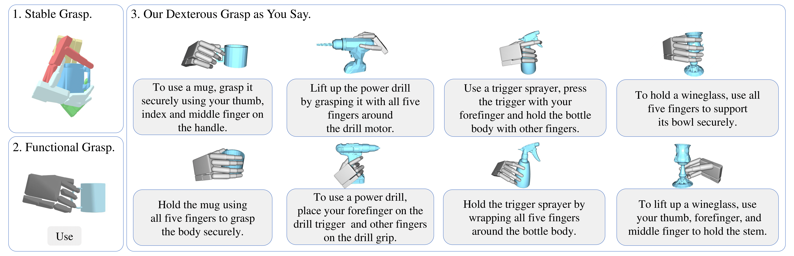

1 Sun Yat-sen University, China
2 Stanford University, USA
† corresponding author
This paper explores a novel task, "Dexterous Grasp as You Say", enabling robots to perform dexterous grasping based on human commands expressed in natural language. However, the development of this field is hindered by the lack of datasets with natural human guidance; thus, we propose a language-guided dexterous grasp dataset, named DexGYSNet, offering high-quality dexterous grasp annotations along with flexible and fine-grained human language guidance. Our dataset construction is cost-efficient, with the carefully-design hand-object interaction retargeting strategy, and the LLM-assisted language guidance annotation system. Equipped with this dataset, we introduce the DexGYSGrasp framework for generating dexterous grasps based on human language instructions, with the capability of producing grasps that are intent-aligned, high quality and diversity. To achieve this capability, our framework decomposes the complex learning process into two manageable progressive objectives and introduce two components to realize them. The first component learns the grasp distribution focusing on intention alignment and generation diversity. And the second component refines the grasp quality while maintaining intention consistency. Extensive experiments are conducted on DexGYSNet and real world environment for validation.
The DexGYSNet dataset is constructed in a cost-effective manner by exploiting human grasp behavior and the extensive capabilities of Large Language Models (LLM). We develop the Hand-Object Interaction Retargeting (HOIR) strategy to transform human grasps into dexterous grasps with high quality and hand-object interaction consistency. Then, we implement an LLM-assisted Language Guidance Annotation system, which leverages the knowledge of Large Language Models (LLM) to produce flexible and fine-grained annotations for language guidance.
DexGYSGrasp framework decomposes the complex learning task into two sequential objectives managed by progressive components. The first intention and diversity grasp component learns a grasp distribution by a conditional diffusion. And the second quality grasp component refines the initial coarse grasps to high-quality ones with the same intentions by a transformer.
The real world experiments are conducted on an Allegro hand, a Flexiv Rizon 4 arm, and an Intel Realsense D415 camera. Although our framework is designed for full object point clouds, we integrate several off-the-shelf methods to enhance its practicality. Specifically, partial object point clouds are obtained through visual grounding and SAM, which are then fed into a point cloud completion network to obtain full point clouds. In execution, we first move the arm to the 6-DOF pose of the dexterous hand root node, and then control the dexterous hand joint angles to the predicted poses. Real world experiments further validate the effectiveness of our method.
If you have any questions, please feel free to contact us: